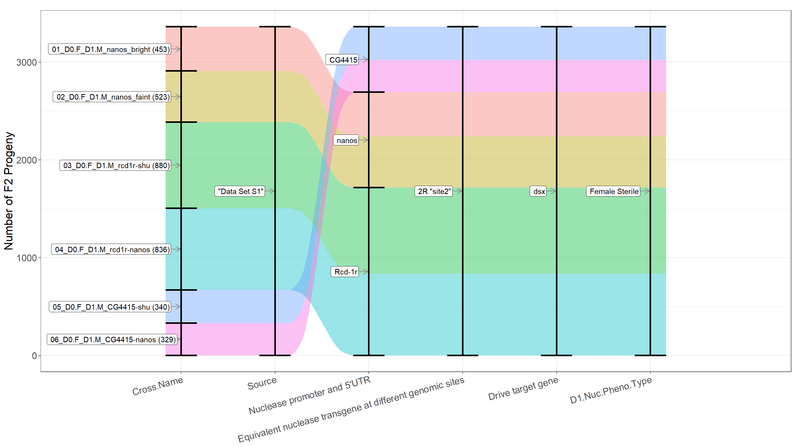
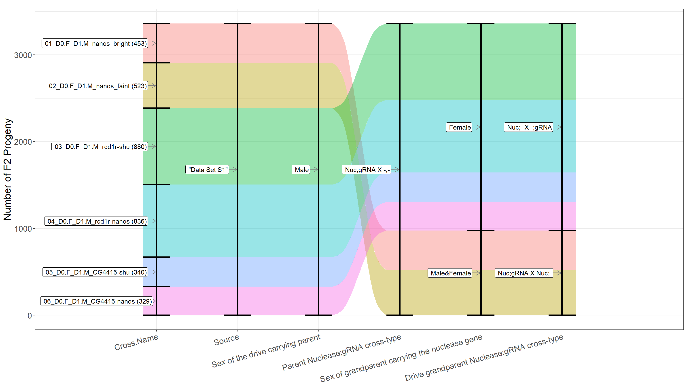
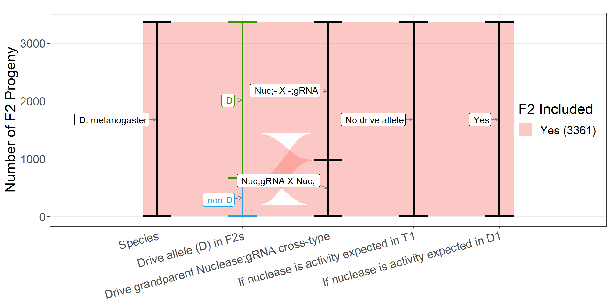
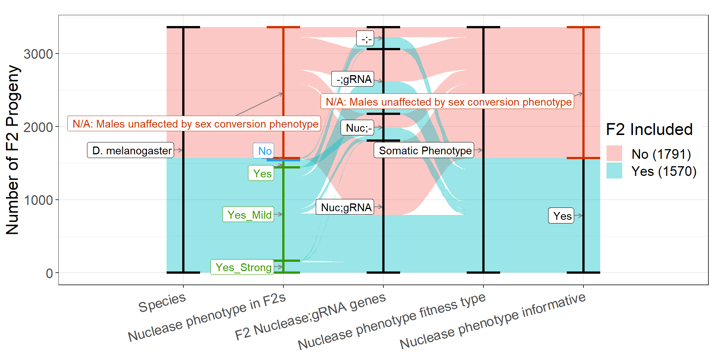
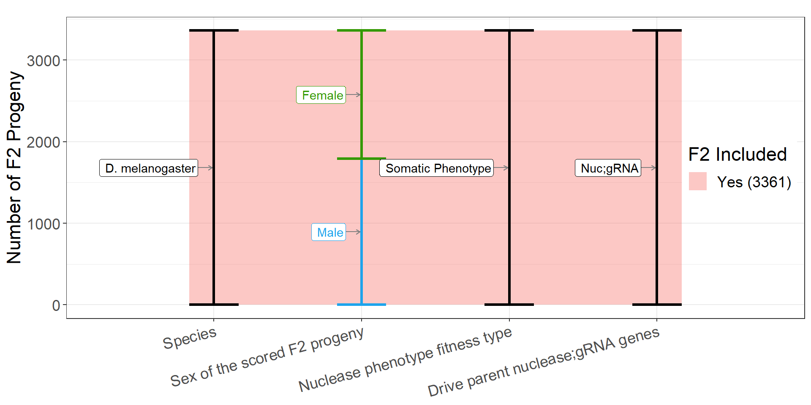
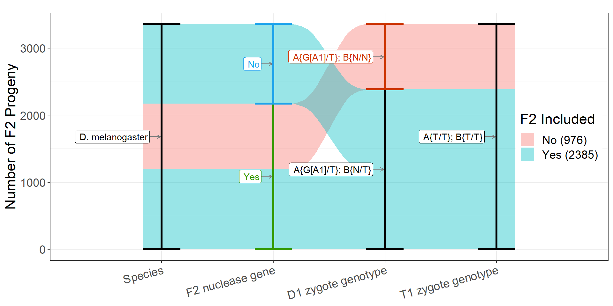

Homing gene drive journal club
What is this presentation?
- Slides are generated in R from a meta-analysis data set and screenshots from the paper
- Feedback on my interpretation of the paper and how best to present it is very much appreciated
- In addition to these JCs, we intended to send slides to the original authors to allow them the opportunity to find mistakes in our interpretation of their data
- Suggestions you make can be simultaneously applied to the code for >80 papers: https://docs.google.com/spreadsheets/d/1kzc8SkY2fb0NEeGcFSwGPR9j_cCKWgiv9lECuCD97UI/edit?usp=sharing
- The same analysis pipeline and figures are used for a manuscript in preparation and a webtool: https://sverkuijl.shinyapps.io/GeneDrive/
- Currently the meta-analysis team is Sebald Verkuijl, Alessa Weiler, Edward Ivimey-Cook, Nikolai Windbichler, Philip Leftwich, Michael Bonsall
Paper title and authors.

Homing drive design targeting dsx

High level nuclease and target features for all crosses
Drive element DNA maps (blue = url) and attributes
| Papers this element appears in | Target locus | Drive | Drive:Target aligned (these Benchling links have issues) | Drive allele size | gRNA promoter(s) | gRNA target seq | gRNA scaffold | non aligning 5’ seq | non aligning 3’ seq | gRNA PAM orientation | |
|---|---|---|---|---|---|---|---|---|---|---|---|
| 11 | Chen2023 | dsx | Drive | Drive:Target | 2365 | A1:DmU6-3(CR31539)-tRNA A2:DmU6-3(CR31539)-tRNA-A1-tRNA-A3-tRNA A3:DmU6-3(CR31539)-tRNA-A1-tRNA | A1:TCATTCACAACGTATTG/GCCTGG A2:TAATTTGAATATCTATG/ACGGGG A3:GTGAGCTGCGCAACACA/ACGCGG | A1:WT-76nt A2:WT-76nt A3:WT-76nt | Both outward |
Nuclease element DNA maps (blue = url) and attributes
| Papers this element appears in | Nuclease insertion index/locus | Nuclease carrying element | Promoter + 5UTR size (bp) | Nuclease codon opt | 3 UTR size (bp) | |
|---|---|---|---|---|---|---|
| 11 | Chen2023 | Du2023 | 2R “site2” | nanos_Cas9-NLS_nanos | 933 | Human | 917 |
| 74 | Chen2023 | 2R “site2” | Rcd-1r_Cas9-NLS_shu | 1074 | Human | 322 |
| 103 | Chen2023 | 2R “site2” | Rcd-1r_Cas9-NLS_nanos | 1074 | Human | 917 |
| 132 | Chen2023 | Du2023 | 2R “site2” | CG4415_Cas9-NLS_shu | 960 | Human | 322 |
| 156 | Chen2023 | Du2023 | 2R “site2” | CG4415_Cas9-NLS_nanos | 960 | Human | 917 |
Cross types (sex/nuclease;gRNA)
Morphology of drive carriers, and dsx sex-specific transcript expression.
The drive inheritance rate of the progeny of dsx drive heterozygous males with different Cas9 elements

Morphological phenotypes of drive females (dsxD+) carrying Cas9 with different promotor5’UTR and 3’UTR combinations
%20carrying%20Cas9%20with%20different%20promotor5’UTR%20and%203’UTR%20combinations.PNG)
Somatic expression of dsx drive females with different Cas9 cassette

Drive inheritance rate of drive males with bright eyes and faint eyes (nanos)
.PNG)
gRNA 3 is not properly recoded on the drive allele

Sequences of three types of nonfunctional resistance alleles.

Scheme of Release of Insects carrying a Dominant sterile Drive (RIDD) system.
%20system..PNG)
Population dynamics of continuous cages with dsxD-het male releases

Modeling the performance of the RIDD system

What gene drive associated metrics were we able to record for this paper (null = absent)
| Metric | Description | Values.in.paper |
|---|---|---|
| Drive allele inheritance rate | The rate at which a specific genetic allele is passed from the D1 parent, which also carries a target allele susceptible to cleavage by nuclease components expressed in that individual, as measured in the F2 offspring. | Pos Neg |
| Drive allele inheritance rate of non-standard crosses | The rate of drive allele inheritance under non-standard crossing conditions, such as intercrossing with another drive carrier, pairing the drive allele with a cut-resistant allele, homozygosity for the drive allele, or in the absence of Cas9 expressing elements. | Null |
| Drive allele inheritance (Shadow drive) | The rate of drive allele inheritance that would only be expected to occur through shadow drive. Shadow drive occurs when deposited nuclease components mediate inheritance bias in the germline of the deposition recipient | Null |
| Recipient chromosomes with a drive allele | In a hemizygous drive carrier, the drive allele is designed to copy itself from the “donor” chromosome to the “recipient” chromosome. In some studies, the homologous chromosomes can be differentiated by a marker separate from the drive allele. This metric reports the fraction of recipient chromosomes carrying the drive allele out of all recipient chromosomes. | Null |
| Drive to r2 alleles on recipient chromosome | Drive to r2 alleles on recipient chromosome | Null |
| Donor chromsome inheritance rate | Donor chromsome inheritance rate | Null |
| Somatic phenotype rate | Somatic phenotypes are changes in the phenotype that are generated by the action of the drive nuclease. In most cases, the somatic phenotype is generated by a haplosufficient endogenous gene into which the gene drive is inserted and which the drive also targets the wild-type version. In individuals heterozygous for the knock-out gene drive allele, embryonic or somatic disruption of the recipient chromosome’s target gene will result in a somatic phenotype. Note that the sex of the drive-carrying parent is not considered for the pairing of somatic phenotype data (it is instead replaced by the sex of the nuclease-carrying parent). | Null Pos Neg |
| non-wildtype alleles | non-wildtype alleles. This includes functional and non-functy | Null |
| Target gene disruption rate | Target gene disruption rate | Null |
| Resistance alleles classified as functional | Resistance alleles classified as functional | Null |
| Female F2s | The fraction of female F2 progeny. | Neg Pos |
| Nuclease transgene inheritance | Nuclease transgene inheritance | Null Pos Neg |
| Drive:Marker recombination rate | Drive:Marker recombination rate | Null |
The subset of factors we deem essential for comparing data (next slides are figures of those that vary)
| Factor | Description | Levels |
|---|---|---|
| Publication | A unique short identifier of the source publication. | Chen2023 |
| Misc.Factor | A grouping of miscellaneous differences between crosses that isn’t fully captured by other factors in the dataset. If something is repeatedly investigated within the dataset, a new dedicated factor will be created. | Bright-FP-Phenotype Faint-FP-Phenotype NA |
| Species | The name of the organism being studied. | D. melanogaster |
| Strain | Description of the strain used in cross. | w1118 |
| Nuclease.Insertion.Variant | An identifier of equivalent nuclease expressing elements inserted at different loci. Note that we do not consider independently derived HDR events at the same locus as insertion variants. If a transgene is reused in a subsequent study, we use the same insertion identifier from the first publication. | 2R “site2” |
| D1.Nuc.Pheno | A phenotype associated with nuclease activity. Most often, a phenotype that is informative about the cutting of the target allele in an individual heterozygous for the drive allele and a target allele. | N/A: Fertility/Fecundity Phenotype |
| D1.Sex | D1 is the F1 parent that is being evaluated, and D1.Sex is the sex of that group/individual. In almost all cases, one sex is of interest for the gene drive process in the cross (e.g., drive-carrying males crossed to wild-type females). In most crosses, this is an individual or group of individuals that are double heterozygous for the gRNA and Cas9 drive element. For preparation / control crosses (e.g., gRNA individuals crossed to Cas9 carriers), the sex carrying the element designed to be biased is designated as D1. | Male |
| T1.Cutting.Expected | The expectation of whether a target allele in individual could be cut. This only takes into account the presence of Cas9 and at least one gRNA gene, and the presence of a valid target. | No drive allele |
| D0.Nuclease.Sex | The sex of the nuclease-carrying grandparent. | Male&Female Female |
| D0.NG_Unsorted | A combination of the D0 nuclease/gRNA descriptions indepedent of sex. This means that if the sexes of the nuclease carrying D0 grandparents are swapped, the value is the same. | Nuc;gRNA X Nuc;- Nuc;- X -;gRNA |
| F2.Nuc.Pheno.Locus | The locus identifier associated with the nuclease activity phenotype. | A |
| F2.Nuc.Pheno.Gene | The gene associated with the nuclease activity phenotype. | dsx |
| F2.Nuc.Pheno.FitType | A description of the type of phenotype associated with the nuclease activity phenotype. | Somatic Phenotype |
| F2.Nuc.Pheno.Sufficiency | A note on whether the nuclease activity phenotype gene is expected to be haplosufficent or haploinsufficient. | N/A: Fertility/Fecundity Phenotype |
| Nuclease.Promoter.5UTR | The nuclease promoter and the 5’UTR involved in this cross. | nanos Rcd-1r CG4415 |
| Nuclease.Gene | The nuclease gene involved in this cross. | Cas9 |
| D.Target.Gene | The gene/locus targeted by the gRNAs/DNA-binding protein involved in this cross. | dsx |
| D.Target.Fitness | A description of the expected consequence of loss of function of the target gene. | Female Sterile |
| D.Target.Sufficiency | A note on whether the target gene is expected to be haplosufficent or haploinsufficient. | Haploinsufficient |
| D.gRNA.Target.Sequence | The DNA-binding protein or gRNA+PAM target sequence. The expected cut site is indicated with a “/” symbol. | A1:TCATTCACAACGTATTG/GCCTGG A2:TAATTTGAATATCTATG/ACGGGG A3:GTGAGCTGCGCAACACA/ACGCGG |
| D.gRNA.Target.Site | A description of the functional significance of gRNA target sequence within the target gene. | A1: CDS A2: CDS A3: CDS |
| D.gRNA.Promoter | A list of the gRNA promoters involved in this cross. The names and sequences of the promoters are matched to those described in Anderson et al. 2020. | A1:DmU6-3(CR31539)-tRNA A2:DmU6-3(CR31539)-tRNA-A1-tRNA-A3-tRNA A3:DmU6-3(CR31539)-tRNA-A1-tRNA |
| F2.Sex | The sex of the F2 progeny. | Male Female |
| F2.KO.Req | Number of alleles required to be disrupted in this F2 genotype to disrupt the function of the target gene. This includes germline mutations where the disruption occurred in the parent. | 1 0 2 |
| F2.NG | Notation of the presence of the nuclease gene and at least one gRNA capable of cutting a target allele at the drive locus. | Nuc;gRNA Nuc;- -;gRNA -;- |
| F1.Possible.Germline.Mutation.Expected | Notation of the possibility of a resistance mutation having been inherited by this F2. | No Yes |
| F1.Nuclease.Sex | The sex of the nuclease-carrying parent. | Male |
| F1.NG_Unsorted | A combination of the D1 nuclease/gRNA descriptions indepedent of sex. This means that if the sexes of the nuclease carrying parent are swapped, the value is the same. | Nuc;gRNA X -;- |
| D1.GESP.Expected | Notation of the possibility of a nuclease component being biased in the D1 individual only in cases where cutting may be expected. | -;gRNA |
| T1.GESP.Expected | Notation of the possibility of a nuclease component being biased in the T1 individual only in cases where cutting may be expected. | No |
Drive_Allele_Inheritance inclusion criteria
X-axis: In the data selection Sankey diagrams, the green labels and columns indicate values considered positive for the metric being measured. The blue labels and columns indicate values that are negative but are still valid and necessary to calculate an overall rate. Red labels and columns indicate values that cause those F2 counts to be excluded, and black labels and columns indicate neutral values that do not affect the metric calculation. If one or more values cause data to be excluded, the streams between columns representing those progeny are coloured red.
Y-axis: F2 count.
Drive_Allele_Inheritance:ID
X-axis: Cross Number_A unique short identifier of the source publication.
Y-axis: The rate at which a specific genetic allele is passed from the D1 parent, which also carries a target allele susceptible to cleavage by nuclease components expressed in that individual, as measured in the F2 offspring.
O-O: Lines are drawn between paired crosses that are identical for the other essential factors, apart from the respective X-axis factor.
Drive_Allele_Inheritance:Misc.Factor
X-axis: A grouping of miscellaneous differences between crosses that isn’t fully captured by other factors in the dataset. If something is repeatedly investigated within the dataset, a new dedicated factor will be created.
Y-axis: The rate at which a specific genetic allele is passed from the D1 parent, which also carries a target allele susceptible to cleavage by nuclease components expressed in that individual, as measured in the F2 offspring.
O-O: Lines are drawn between paired crosses that are identical for the other essential factors, apart from the respective X-axis factor.
Drive_Allele_Inheritance:D0.Nuclease.Sex
X-axis: The sex of the nuclease-carrying grandparent.
Y-axis: The rate at which a specific genetic allele is passed from the D1 parent, which also carries a target allele susceptible to cleavage by nuclease components expressed in that individual, as measured in the F2 offspring.
O-O: Lines are drawn between paired crosses that are identical for the other essential factors, apart from the respective X-axis factor.
Drive_Allele_Inheritance:D0.NG_Unsorted
X-axis: A combination of the D0 nuclease/gRNA descriptions indepedent of sex. This means that if the sexes of the nuclease carrying D0 grandparents are swapped, the value is the same.
Y-axis: The rate at which a specific genetic allele is passed from the D1 parent, which also carries a target allele susceptible to cleavage by nuclease components expressed in that individual, as measured in the F2 offspring.
O-O: Lines are drawn between paired crosses that are identical for the other essential factors, apart from the respective X-axis factor.
Drive_Allele_Inheritance:Nuclease.Promoter.5UTR
X-axis: The nuclease promoter and the 5’UTR involved in this cross.
Y-axis: The rate at which a specific genetic allele is passed from the D1 parent, which also carries a target allele susceptible to cleavage by nuclease components expressed in that individual, as measured in the F2 offspring.
O-O: Lines are drawn between paired crosses that are identical for the other essential factors, apart from the respective X-axis factor.
Nuclease_Induced_Phenotype inclusion criteria
X-axis: In the data selection Sankey diagrams, the green labels and columns indicate values considered positive for the metric being measured. The blue labels and columns indicate values that are negative but are still valid and necessary to calculate an overall rate. Red labels and columns indicate values that cause those F2 counts to be excluded, and black labels and columns indicate neutral values that do not affect the metric calculation. If one or more values cause data to be excluded, the streams between columns representing those progeny are coloured red.
Y-axis: F2 count.
Nuclease_Induced_Phenotype:ID
X-axis: Cross Number_A unique short identifier of the source publication.
Y-axis: Somatic phenotypes are changes in the phenotype that are generated by the action of the drive nuclease. In most cases, the somatic phenotype is generated by a haplosufficient endogenous gene into which the gene drive is inserted and which the drive also targets the wild-type version. In individuals heterozygous for the knock-out gene drive allele, embryonic or somatic disruption of the recipient chromosome’s target gene will result in a somatic phenotype. Note that the sex of the drive-carrying parent is not considered for the pairing of somatic phenotype data (it is instead replaced by the sex of the nuclease-carrying parent).
O-O: Lines are drawn between paired crosses that are identical for the other essential factors, apart from the respective X-axis factor.
Nuclease_Induced_Phenotype:F2.KO.Req
X-axis: Number of alleles required to be disrupted in this F2 genotype to disrupt the function of the target gene. This includes germline mutations where the disruption occurred in the parent.
Y-axis: Somatic phenotypes are changes in the phenotype that are generated by the action of the drive nuclease. In most cases, the somatic phenotype is generated by a haplosufficient endogenous gene into which the gene drive is inserted and which the drive also targets the wild-type version. In individuals heterozygous for the knock-out gene drive allele, embryonic or somatic disruption of the recipient chromosome’s target gene will result in a somatic phenotype. Note that the sex of the drive-carrying parent is not considered for the pairing of somatic phenotype data (it is instead replaced by the sex of the nuclease-carrying parent).
O-O: Lines are drawn between paired crosses that are identical for the other essential factors, apart from the respective X-axis factor.
Nuclease_Induced_Phenotype:F2.NG
X-axis: Notation of the presence of the nuclease gene and at least one gRNA capable of cutting a target allele at the drive locus.
Y-axis: Somatic phenotypes are changes in the phenotype that are generated by the action of the drive nuclease. In most cases, the somatic phenotype is generated by a haplosufficient endogenous gene into which the gene drive is inserted and which the drive also targets the wild-type version. In individuals heterozygous for the knock-out gene drive allele, embryonic or somatic disruption of the recipient chromosome’s target gene will result in a somatic phenotype. Note that the sex of the drive-carrying parent is not considered for the pairing of somatic phenotype data (it is instead replaced by the sex of the nuclease-carrying parent).
O-O: Lines are drawn between paired crosses that are identical for the other essential factors, apart from the respective X-axis factor.
Nuclease_Induced_Phenotype:F1.Possible.Germline.Mutation.Expected
X-axis: Notation of the possibility of a resistance mutation having been inherited by this F2.
Y-axis: Somatic phenotypes are changes in the phenotype that are generated by the action of the drive nuclease. In most cases, the somatic phenotype is generated by a haplosufficient endogenous gene into which the gene drive is inserted and which the drive also targets the wild-type version. In individuals heterozygous for the knock-out gene drive allele, embryonic or somatic disruption of the recipient chromosome’s target gene will result in a somatic phenotype. Note that the sex of the drive-carrying parent is not considered for the pairing of somatic phenotype data (it is instead replaced by the sex of the nuclease-carrying parent).
O-O: Lines are drawn between paired crosses that are identical for the other essential factors, apart from the respective X-axis factor.
Nuclease_Induced_Phenotype:Misc.Factor
X-axis: A grouping of miscellaneous differences between crosses that isn’t fully captured by other factors in the dataset. If something is repeatedly investigated within the dataset, a new dedicated factor will be created.
Y-axis: Somatic phenotypes are changes in the phenotype that are generated by the action of the drive nuclease. In most cases, the somatic phenotype is generated by a haplosufficient endogenous gene into which the gene drive is inserted and which the drive also targets the wild-type version. In individuals heterozygous for the knock-out gene drive allele, embryonic or somatic disruption of the recipient chromosome’s target gene will result in a somatic phenotype. Note that the sex of the drive-carrying parent is not considered for the pairing of somatic phenotype data (it is instead replaced by the sex of the nuclease-carrying parent).
O-O: Lines are drawn between paired crosses that are identical for the other essential factors, apart from the respective X-axis factor.
Nuclease_Induced_Phenotype:D0.Nuclease.Sex
X-axis: The sex of the nuclease-carrying grandparent.
Y-axis: Somatic phenotypes are changes in the phenotype that are generated by the action of the drive nuclease. In most cases, the somatic phenotype is generated by a haplosufficient endogenous gene into which the gene drive is inserted and which the drive also targets the wild-type version. In individuals heterozygous for the knock-out gene drive allele, embryonic or somatic disruption of the recipient chromosome’s target gene will result in a somatic phenotype. Note that the sex of the drive-carrying parent is not considered for the pairing of somatic phenotype data (it is instead replaced by the sex of the nuclease-carrying parent).
O-O: Lines are drawn between paired crosses that are identical for the other essential factors, apart from the respective X-axis factor.
Nuclease_Induced_Phenotype:D0.NG_Unsorted
X-axis: A combination of the D0 nuclease/gRNA descriptions indepedent of sex. This means that if the sexes of the nuclease carrying D0 grandparents are swapped, the value is the same.
Y-axis: Somatic phenotypes are changes in the phenotype that are generated by the action of the drive nuclease. In most cases, the somatic phenotype is generated by a haplosufficient endogenous gene into which the gene drive is inserted and which the drive also targets the wild-type version. In individuals heterozygous for the knock-out gene drive allele, embryonic or somatic disruption of the recipient chromosome’s target gene will result in a somatic phenotype. Note that the sex of the drive-carrying parent is not considered for the pairing of somatic phenotype data (it is instead replaced by the sex of the nuclease-carrying parent).
O-O: Lines are drawn between paired crosses that are identical for the other essential factors, apart from the respective X-axis factor.
Nuclease_Induced_Phenotype:Nuclease.Promoter.5UTR
X-axis: The nuclease promoter and the 5’UTR involved in this cross.
Y-axis: Somatic phenotypes are changes in the phenotype that are generated by the action of the drive nuclease. In most cases, the somatic phenotype is generated by a haplosufficient endogenous gene into which the gene drive is inserted and which the drive also targets the wild-type version. In individuals heterozygous for the knock-out gene drive allele, embryonic or somatic disruption of the recipient chromosome’s target gene will result in a somatic phenotype. Note that the sex of the drive-carrying parent is not considered for the pairing of somatic phenotype data (it is instead replaced by the sex of the nuclease-carrying parent).
O-O: Lines are drawn between paired crosses that are identical for the other essential factors, apart from the respective X-axis factor.
Female_Progeny inclusion criteria
X-axis: In the data selection Sankey diagrams, the green labels and columns indicate values considered positive for the metric being measured. The blue labels and columns indicate values that are negative but are still valid and necessary to calculate an overall rate. Red labels and columns indicate values that cause those F2 counts to be excluded, and black labels and columns indicate neutral values that do not affect the metric calculation. If one or more values cause data to be excluded, the streams between columns representing those progeny are coloured red.
Y-axis: F2 count.
Female_Progeny:ID
X-axis: Cross Number_A unique short identifier of the source publication.
Y-axis: The fraction of female F2 progeny.
O-O: Lines are drawn between paired crosses that are identical for the other essential factors, apart from the respective X-axis factor.
Female_Progeny:Misc.Factor
X-axis: A grouping of miscellaneous differences between crosses that isn’t fully captured by other factors in the dataset. If something is repeatedly investigated within the dataset, a new dedicated factor will be created.
Y-axis: The fraction of female F2 progeny.
O-O: Lines are drawn between paired crosses that are identical for the other essential factors, apart from the respective X-axis factor.
Female_Progeny:D0.Nuclease.Sex
X-axis: The sex of the nuclease-carrying grandparent.
Y-axis: The fraction of female F2 progeny.
O-O: Lines are drawn between paired crosses that are identical for the other essential factors, apart from the respective X-axis factor.
Female_Progeny:D0.NG_Unsorted
X-axis: A combination of the D0 nuclease/gRNA descriptions indepedent of sex. This means that if the sexes of the nuclease carrying D0 grandparents are swapped, the value is the same.
Y-axis: The fraction of female F2 progeny.
O-O: Lines are drawn between paired crosses that are identical for the other essential factors, apart from the respective X-axis factor.
Female_Progeny:Nuclease.Promoter.5UTR
X-axis: The nuclease promoter and the 5’UTR involved in this cross.
Y-axis: The fraction of female F2 progeny.
O-O: Lines are drawn between paired crosses that are identical for the other essential factors, apart from the respective X-axis factor.
Nuclease_Carrying_Progeny_From_DoubleHet inclusion criteria
X-axis: In the data selection Sankey diagrams, the green labels and columns indicate values considered positive for the metric being measured. The blue labels and columns indicate values that are negative but are still valid and necessary to calculate an overall rate. Red labels and columns indicate values that cause those F2 counts to be excluded, and black labels and columns indicate neutral values that do not affect the metric calculation. If one or more values cause data to be excluded, the streams between columns representing those progeny are coloured red.
Y-axis: F2 count.
Nuclease_Carrying_Progeny_From_DoubleHet:ID
X-axis: Cross Number_A unique short identifier of the source publication.
Y-axis: Nuclease transgene inheritance
O-O: Lines are drawn between paired crosses that are identical for the other essential factors, apart from the respective X-axis factor.
Nuclease_Carrying_Progeny_From_DoubleHet:Nuclease.Promoter.5UTR
X-axis: The nuclease promoter and the 5’UTR involved in this cross.
Y-axis: Nuclease transgene inheritance
O-O: Lines are drawn between paired crosses that are identical for the other essential factors, apart from the respective X-axis factor.